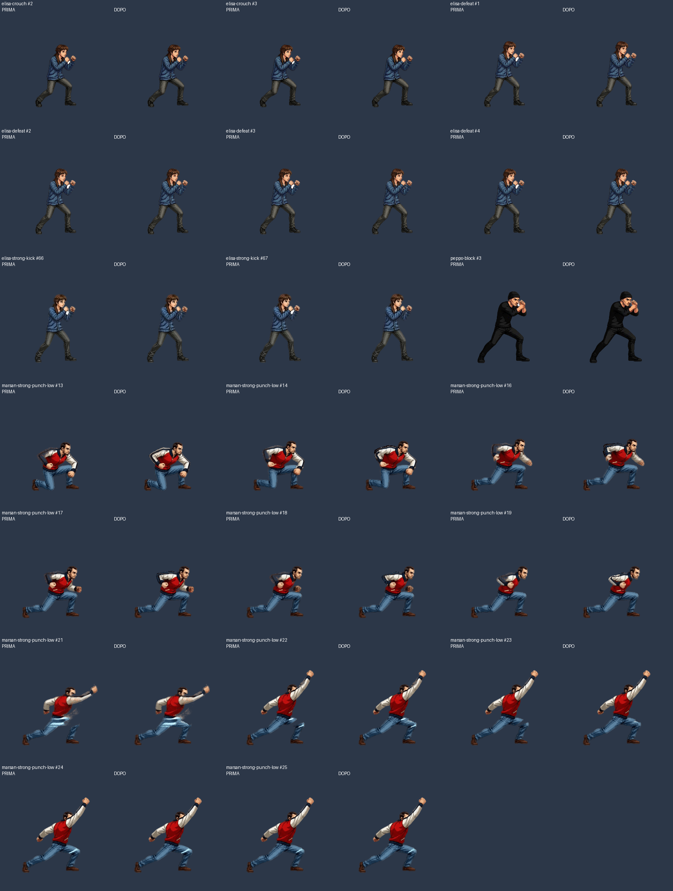

23 novembre 2026. Corretti 20 fotogrammi in cinque spritesheet, per 13.431 pixel complessivi. Nessun pixel modificato fuori dalle maschere verificate. Tutti gli altri fotogrammi sono identici al PNG presente prima della pulizia: scie, polvere, flash, particelle e bordi esterni conservati.
I numeri qui sopra partono da 1. Elisa e Peppo: rimossi esclusivamente riempimenti bianchi negli spazi fra arti/viso. Marsan: ricostruita la stoffa mancante di manica e coscia del pugno forte basso con riferimenti ImageGen, compositing locale e palette originale. Le immagini generate complete non sono state sostituite agli sprite.
Il confronto riguarda i difetti confermati: non applica una rimozione indiscriminata dei bianchi o un riempimento automatico di tutti gli spazi fra arti.
Verifica pixel, maschere e hash · Prompt delle ricostruzioni ImageGen · Timing del nuovo Calcio medio basso
